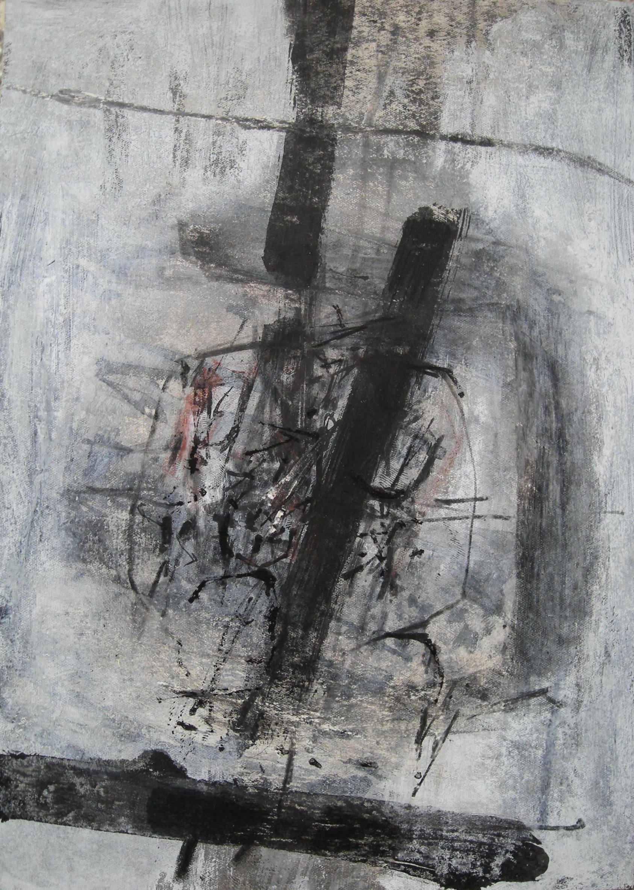

Karl Fred Dahmen (Karl Friedrich Dahmen)
1917 – 1981
Artist Biography
Karl Fred Dahmen was born in Stolberg and in the 1930s attended Aachen School of Applied Arts. After war service he briefly attended Dusseldorf Art Academy in 1945 and from 1951 spent much time in Paris, absorbing the influences there, before co-founding in 1952 the “New Aachen group”. He was to become one of Germany’s foremost exponents of Taschisme and Art Informel, working in paint, print and collage and from 1967-1981 was a professor at the Academy of Art in Munich. As an abstract artist and teacher Dahmen influenced a younger generation of artists such as Gunther Forg and his work was shown widely, including at group exhibitions in London, Paris and elsewhere. Dahmen’s estate is managed by Van Ham which in 2017 is planning a major touring exhibition to celebrate the centenary of his birth.

Untitled, 1961